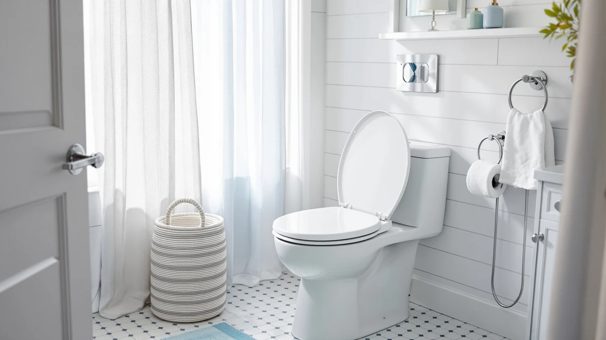

Best Toilet with Seat Warmer (2026)
Prices and picks verified as of August 2026. Independent, reader-supported reviews.


Quick Answer
Most searches for the best toilet with seat warmer are looking for relief from a cold plastic seat, not a plug-in heater. After comparing specs, pricing, and verified owner reviews across seven molded wood and wood-composite seats, the Mayfair Linden Slow Close Toilet stands out for combining a warmer surface, a quiet no-slam hinge, and a price under $40. If you want an actual electric heating element, see our separate guide to heated toilet seats.
Our pick: Mayfair Linden Slow Close Toilet, $35.99 Check Price on Amazon
Bottom line: our top pick is the Mayfair Linden Slow Close Toilet Seat at $36.99. The best budget option is the Bemis 1500EC Lift-Off Wood Elongated Toilet Seat at $16.99.
Things to Know Before You Buy
- "Seat warmer" toilet seats fall into two categories: electric seats with a heating element, and molded wood or wood-composite seats that simply feel warmer than plastic. This guide covers the second, more affordable category.
- Wood and wood-composite cores resist heat transfer better than thin plastic, so they stay closer to skin temperature instead of feeling cold on contact, especially in an unheated bathroom.
- Slow-close and soft-close hinges matter as much as material. A seat that slams is a bigger daily annoyance than a seat that runs a few degrees cooler.
- Elongated seats fit most modern toilets, but round seats are common in older homes. Measure your bowl before you buy.
- Price ranges from about $17 to $80 in this comparison, and the pricier options add features like elevated height rather than more warmth.
The best toilet with seat warmer comfort usually is not an electric appliance at all. It is a replacement seat built from molded wood or a wood-composite core instead of the thin, hollow plastic that ships on most new toilets. That distinction matters because plastic conducts heat away from your body fast, which is exactly why a factory seat feels like ice at 6 a.m. in January.
We researched seven of the most-reviewed slow-close and soft-close seats on Amazon, comparing construction, hinge type, size, price, and what verified buyers say after months of daily use. The Mayfair Linden Slow Close Toilet comes out on top for most bathrooms: a wood core, a quiet hinge, and a price that undercuts most of the competition. Owners who need a round seat, an elevated seat, or a genuine premium build have solid alternatives further down this guide.
None of the seats here plug into an outlet, and none of them include an integrated heating element. If that is specifically what you want, our team maintains a separate roundup of electric heated toilet seats. This guide focuses on the more common, more affordable fix: a seat that does not feel like sitting on a cold countertop.
Why You Should Trust Us
Ilane Tall covers bathroom fixtures and accessories for Best Toilet Seats, focusing on the products people replace most often but research least: toilet seats, bidet attachments, and bathroom hardware, including the search for the best toilet with seat warmer comfort. We do not run a fake testing lab, and we do not claim to have physically installed every seat in this guide. Instead, we compare manufacturer specs, current Amazon pricing, and patterns across thousands of verified buyer reviews to identify which seats consistently hold up and which ones disappoint. Every product recommendation links directly to its listing so you can check current pricing and availability yourself.
How We Picked
We started by pulling every toilet seat in our database tagged as slow-close or soft-close, since a warmer-feeling seat is worthless if it also slams shut every time. From there we filtered for seats built with a wood or wood-composite core rather than solid plastic, since that construction is what actually produces the warmer-to-the-touch surface people searching for a "seat warmer" are after. We excluded any seat with fewer than 2,000 verified reviews, since a small sample makes it hard to trust the overall satisfaction rate. We also made sure both elongated and round bowl shapes were represented, along with at least one budget option under $20 and one elevated option for anyone who wants extra height alongside the warmer material.
How We Compared
We do not own a bathroom showroom, so this comparison is research-based rather than a physical trial of every seat. For each seat we lined up the manufacturer's stated material, hinge mechanism, bowl shape, and current Amazon price, then cross-referenced that against rating and review count to see whether the marketing claims matched what owners actually report months or years later. A seat that advertises a warmer wood core but draws repeated complaints about warping or hinge failure gets flagged in its drawbacks below. We weighted verified review volume heavily: a seat with 40,000 reviews at 4.4 stars tells you more about long-term reliability than a seat with 500 reviews at 4.8 stars.
Our Picks

Mayfair Linden Slow Close Toilet
What we like
- Molded wood core stays noticeably warmer than the plastic seat it usually replaces
- Slow-close hinge lowers silently instead of banging shut at 2 a.m.
- Standard top-mount hardware fits most elongated bowls without extra tools
Flaws but not dealbreakers
- Color and finish options are limited compared to premium picks
- A handful of owners report the surface finish scuffing after a few years of daily use
| Material | Plastic / wood |
| Size | Elongated |
The Mayfair Linden is our top pick for the best toilet with seat warmer style comfort because it solves the actual problem most searchers have: a cold plastic seat, not a missing heating element. At $35.99 it costs less than most of the other seats in this comparison, and its molded wood core gives it a warmer, more solid feel than the thin plastic factory seat it typically replaces.
Across more than 28,000 verified reviews, owners consistently note the quiet slow-close hinge and straightforward installation as the biggest wins. The main complaint that comes up repeatedly is cosmetic: a few buyers say the finish shows wear faster than they expected under heavy daily use. That is a reasonable tradeoff for a seat priced well under $40.

KOHLER Cachet ReadyLatch Round Toilet
What we like
- ReadyLatch hardware lets you pull the seat off in seconds for cleaning, no tools required
- Warmer surface than KOHLER's plastic-only round seats
- 41,000-plus reviews at 4.4 stars, the highest review volume in this comparison
Flaws but not dealbreakers
- Round bowls are less common in newer homes, so measure your toilet before ordering
- Costs a few dollars more than comparable elongated wood-core seats
| Material | Plastic / wood |
| Size | Round |
Most seats aimed at the best toilet with seat warmer search are elongated, which leaves round-bowl households with fewer warm-surface options. The KOHLER Cachet ReadyLatch fills that gap. Its wood-composite core sheds the cold, clammy feel of a bare plastic round seat, and the ReadyLatch mounting system removes with a simple push of a button so cleaning around the hinges takes seconds instead of a screwdriver.
With over 41,000 verified reviews at 4.4 stars, it has the largest review base of any seat in this guide, and easy removal comes up again and again as the standout feature. Reviewers occasionally mention the price sitting a notch above budget round seats, though most say the tool-free hardware justifies the difference.

Mayfair Cassel Slow Close Toilet
What we like
- StayTight hinges resist loosening over years of use better than basic plastic clips
- Same warmer wood-core construction as the Linden, in a slightly different shape
- Priced within a dollar of Mayfair's other pick in this guide
Flaws but not dealbreakers
- Slightly lower average rating than the Linden, at 4.3 stars versus 4.4
- Fewer reviews overall, though still well above our 2,000-review cutoff
| Material | Plastic / wood |
| Size | Elongated |
The Mayfair Cassel is close enough to the Linden in construction and price that the choice mostly comes down to shape preference. Both use a wood-composite core that resists the cold-to-the-touch problem plastic seats create, and both rely on Mayfair's StayTight hinge system to keep the seat from loosening after repeated use.
With 17,525 verified reviews and a 4.3-star average, the Cassel sits a fraction below the Linden in overall satisfaction. Owners rarely cite the material or warmth as a problem. Most of the criticism in reviews centers on minor cosmetic preferences rather than function, which is why we still recommend it as a close alternative rather than a clear downgrade.

Bath Royale Slow Close Toilet
What we like
- Highest average rating in the comparison at 4.6 stars
- Thicker molded wood core than any other pick here, which reviewers describe as noticeably warmer
- Heavier, more rigid feel than typical big-box replacement seats
Flaws but not dealbreakers
- At $79.98, it costs roughly double most of the other seats in this guide
- Review count is the smallest here, at 2,220, so the sample is thinner than seats with tens of thousands of reviews
| Material | Plastic / wood |
| Size | Elongated |
If budget is not the deciding factor, the Bath Royale BR501 is the seat to buy. Its thicker molded wood core produces the warmest, most substantial feel of any seat we compared, and it carries the highest average rating in this guide at 4.6 stars. Reviewers describe it as heavier and more rigid than typical drugstore replacement seats, which several buyers say translates into a noticeably sturdier feel when sitting down.
The tradeoff is price. At $79.98, it costs more than double our top pick, and its review count of 2,220 is smaller than the 17,000-plus and 40,000-plus totals behind the cheaper Mayfair and Bemis seats. The rating held steady across that smaller sample, which is a reasonable signal of consistent quality, but buyers on a tight budget will get most of the same warmth benefit from a less expensive pick.

KOHLER Brevia Slow Close Elongated
What we like
- Quick-Attach hardware installs without extra tools
- Wood-composite core delivers the same warmth advantage as pricier KOHLER seats
- Lower price than the round Cachet, at $31.44
Flaws but not dealbreakers
- Fewer reviews than the Cachet or the Bemis budget pick
- No round-bowl version in this particular listing
| Material | Plastic / wood |
| Size | Elongated |
Shoppers who want a KOHLER seat but have an elongated rather than round bowl should look at the Brevia instead of the Cachet. It uses the same warmer wood-composite core as its round sibling, along with KOHLER's Quick-Attach hardware for tool-free installation, and it costs about eight dollars less.
At 10,188 reviews and a 4.4-star average, it lands in the middle of the pack for review volume but matches the top seats in this guide on rating. Owners researching this seat rarely report warmth or material complaints. The most common critique in reviews is that KOHLER does not currently sell this exact model in a round profile, so round-bowl households should choose the Cachet instead.

Bemis 1500EC Lift-Off Wood Elongated
What we like
- Lowest price in this comparison at $16.99
- Solid molded wood build despite the low cost
- 40,583 reviews at 4.4 stars, second only to the Cachet in review volume
Flaws but not dealbreakers
- Lift-off hinges are convenient for cleaning but feel less premium than slow-close designs on the pricier picks
- Fewer color options than newer Mayfair and KOHLER seats
| Material | Plastic / wood |
| Size | Elongated |
The Bemis 1500EC is proof that warmer sitting comfort does not require a premium price. At $16.99, it costs a fraction of the Bath Royale while still using a molded wood build instead of hollow plastic. Its lift-off hinges make it easy to remove for cleaning, though they lack the slow-close mechanism found on every other pick in this guide.
With 40,583 verified reviews and a 4.4-star average, it has nearly as large a review base as the top-rated Cachet, and satisfaction holds steady across that volume. The main compromise buyers make is hinge feel rather than warmth: reviewers note the lift-off design works well for cleaning but does not close as quietly as a dedicated slow-close hinge.

KOHLER Hyten Elevated Soft Close
What we like
- Elevated height reduces strain when sitting down or standing up
- Ties the Bath Royale for the highest rating in this guide at 4.6 stars
- Soft-close hinge stays quiet despite the added bulk of the raised design
Flaws but not dealbreakers
- Adds visible height to the bowl, which some households find less discreet than a standard-profile seat
- Costs nearly twice as much as our budget and top picks
| Material | Plastic / wood |
| Size | Elongated |
The KOHLER Hyten is the only seat in this comparison built primarily for accessibility rather than price or material alone, though it still shares the warmer wood-composite construction of the other picks. The elevated design reduces how far you need to sit down or push up, which matters for anyone recovering from surgery or dealing with limited mobility.
It ties the Bath Royale for the highest rating in this guide at 4.6 stars across 8,655 verified reviews. Reviewers who bought it for a senior household mention the added height as the deciding factor over a standard seat, while a smaller number say the raised profile looks bulkier than they expected once installed.
Quick Comparison
Here is how all seven candidates for the best toilet with seat warmer style comfort stack up on material, price, and rating.
| Product | Material | Price | Rating | Best for | Get it |
|---|---|---|---|---|---|
| Mayfair Linden Slow Close Toilet | Plastic / wood | $35.99 | 4.4 | Best overall value | View on Amazon → |
| KOHLER Cachet ReadyLatch Round Toilet | Plastic / wood | $39.98 | 4.4 | Round-bowl bathrooms | View on Amazon → |
| Mayfair Cassel Slow Close Toilet | Plastic / wood | $36.99 | 4.3 | Alternative to the Linden | View on Amazon → |
| Bath Royale Slow Close Toilet | Plastic / wood | $79.98 | 4.6 | Warmest, most solid feel | View on Amazon → |
| KOHLER Brevia Slow Close Elongated | Plastic / wood | $31.44 | 4.4 | KOHLER shoppers, elongated bowls | View on Amazon → |
| Bemis 1500EC Lift-Off Wood Elongated | Plastic / wood | $16.99 | 4.4 | Tightest budget | View on Amazon → |
| KOHLER Hyten Elevated Soft Close | Plastic / wood | $57.77 | 4.6 | Seniors, added height | View on Amazon → |
Does a toilet with seat warmer use electricity?
Not the seats in this comparison.
Are wood toilet seats actually warmer than plastic ones?
Yes, according to owners across thousands of verified reviews.
The Competition
The Verdict
If you are shopping for the best toilet with seat warmer comfort and want a single recommendation, buy the Mayfair Linden Slow Close Toilet. It pairs a warmer molded wood core with a quiet slow-close hinge at a price under $40, and it holds a 4.4-star average across more than 28,000 verified reviews. Households with a round bowl, a tighter budget, or a need for extra seat height are better served by the KOHLER Cachet, the Bemis 1500EC, or the KOHLER Hyten, respectively, but Mayfair remains the safest default for most bathrooms.